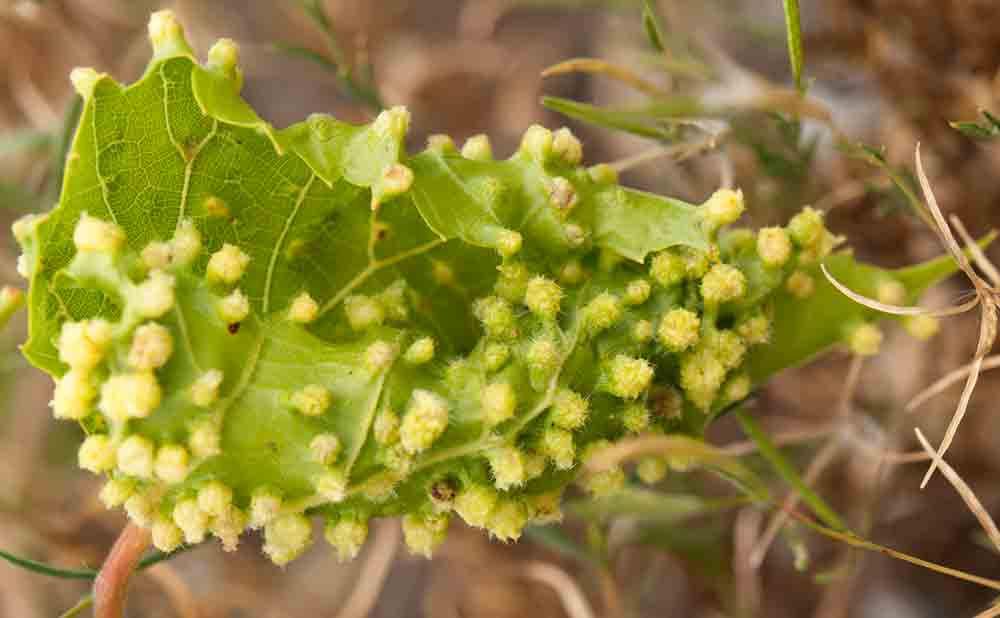
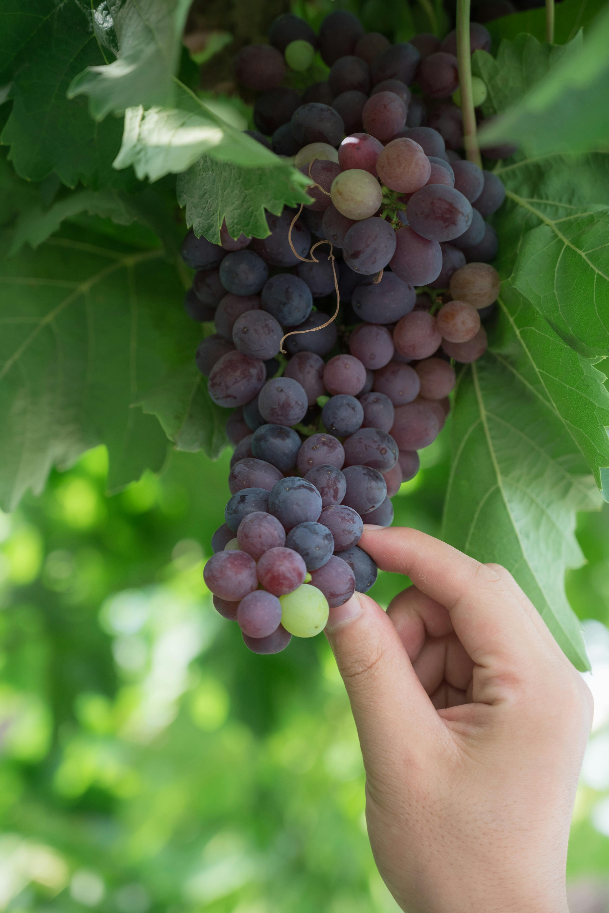
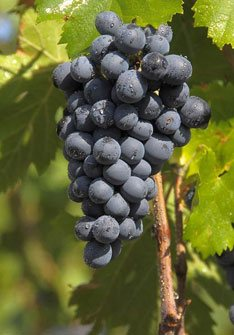
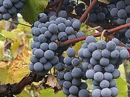
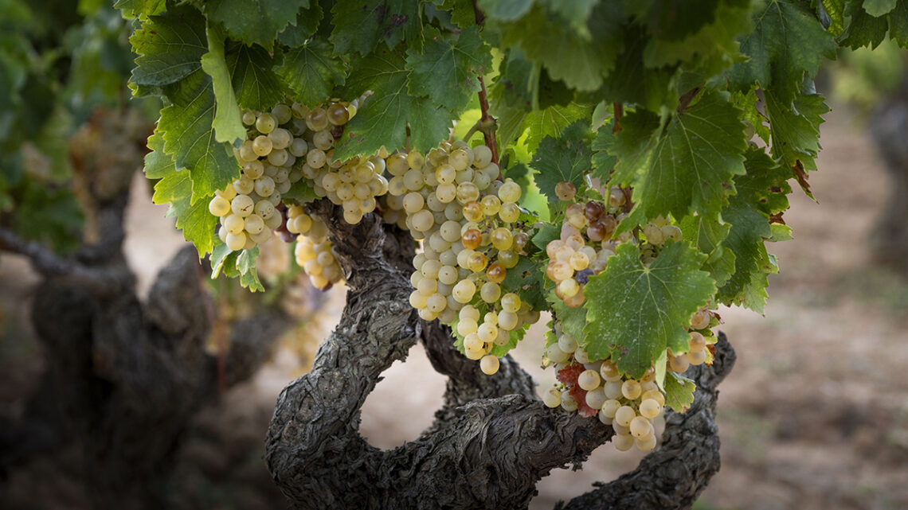
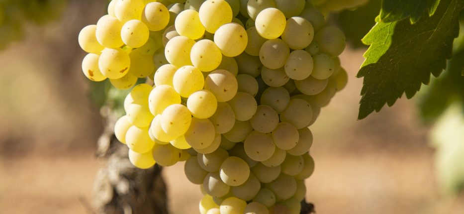

No existe «un» vino de Tarragona
Hay territorios donde el vino no es una industria, sino una consecuencia natural del lugar. La provincia de Tarragona lleva la vid en el paisaje desde hace tanto tiempo que en algunos rincones ya resulta imposible distinguir dónde termina uno y empieza la otra.
La provincia produce vinos tan distintos entre sí que un priorato de llicorella y un trepat de la Conca difícilmente pasarían por hermanos en una cata ciega. Esa diversidad es la condición geográfica del territorio.

Dos mil años de vino, tres momentos críticos
Roma: el primer gran puerto vinícola del Mediterráneo occidental
Cuando los romanos llegaron a la Tarraco del siglo II a.C., aportaron la infraestructura comercial. El vinum tarraconense llegaba hasta Ostia y la Galia con regularidad suficiente para que Marcial y Plinio el Viejo lo mencionaran.
Dejó dos huellas: la vocación comercial y la plantación sistemática de viñedo. El Camp debe buena parte de su identidad vitícola a esa lógica.
La filoxera francesa: la gran oportunidad envenenada
En 1863, Daktulosphaira vitifoliae aparece en el Ródano. En treinta años arrasa el viñedo europeo. Tarragona se convierte en proveedor masivo.
El siglo cooperativista y su herencia
La crisis del siglo XX genera las cooperativas agrícolas —las catedrales del vino modernistas. Pero el vino tarraconense sale anónimo, a granel, alimentando mezclas vendidas con otros nombres.
Todo lo que ha pasado en los últimos cuarenta años en el vino de Tarragona se explica como una reacción a ese siglo anónimo.
La historia que importa: Álvaro Palacios, René Barbier, Josep Lluís Pérez, Daphne Glorian, Carles Pastrana. En los ochenta recuperaron viñas viejas sobre llicorella. Clos Mogador, L'Ermita, Finca Dofí, Clos Erasmus, Clos Martinet pusieron al Priorat en el mapa mundial en menos de una década.

Ocho mundos en una sola provincia
La única DOQ catalana junto con Rioja en España. Y se nota.
El Priorat son once municipios en un anfiteatro de pizarra. Vendimia manual, viñas que rinden entre 5 y 20 hectolitros por hectárea. Eso explica los precios.
El clásico es tinto, garnacha-cariñena de graduación alta, fruta negra madura, regaliz, final mineral salino. Los blancos de garnacha sobre llicorella: densos, estructurados, con tensión mineral.
Per explorar: Scala Dei · Clos Mogador · Álvaro Palacios · Clos Erasmus · Mas Doix · Terroir al Límit · Costers del Siurana
El Priorat asequible, según el tópico. La verdad es más compleja.
Montsant rodea al Priorat. DO de mosaico de suelos: llicorella en Marçà, granito al norte, arcillas en cotas bajas. Más versatilidad y experimentación.
Copa: fruta roja más fresca, taninos más amables, graduación algo menor. Viña vieja (Acústic, Venus, Joan d'Anguera): liga cercana al Priorat a la mitad de precio.
Per explorar: Acústic · Venus La Universal · Joan d'Anguera · Orto · Laurona · Celler de Capçanes
La DO más vieja de la provincia y la más heterogénea. Un territorio en plena redefinición.
La DO Tarragona, la más extensa. Bodegas pequeñas (Adernats, Josep Foraster, Celler de l'Encastell, Vinyes Domènech) trabajan la garnacha mediterránea del Camp como variedad principal.
Per explorar: Adernats · Josep Foraster · Celler de l'Encastell · Vinyes Domènech · Miró · Rofes · Yzaguirre
La DO más injustamente olvidada. Y probablemente la que más te sorprenderá en una cata ciega.
Lo interesante: el renacimiento del trepat. Vinos ligeros, color cereza traslúcido, aromas florales, acidez cortante. Se bebe frío, como un Pinot Noir mediterráneo.
Per explorar: Josep Foraster · Mas Foraster · Carles Andreu · Sanstravé
La capital mundial de la garnacha blanca. Literalmente.
La gran historia: la garnacha blanca. El 90% de toda la de Cataluña. Color dorado, fruta blanca madura, hinojo, anís, cuerpo notable y final amargo noble.
Per explorar: Edetària · Herència Altés · Lafou Celler · Celler Piñol · Cooperativa de Pinell de Brai · Cooperativa de Gandesa
La DO compartida con Barcelona. 16 municipios tarragoneses en la franja norte.
DO compartida. Aquí nació el cava (Codorníu, 1872). Macabeo, xarel·lo, parellada. Gramona, Recaredo, Llopart han dignificado la categoría con crianzas largas.
Per explorar: Torres · Jean Leon · Albet i Noya · Gramona · Recaredo · Llopart
La denominación del espumoso por método tradicional. Tarragona produce buena parte del cava catalán.
DO interprovincial centrada en el espumoso por método tradicional. Tarragona aporta viñedo significativo y bodegas históricas. Las categorías Reserva, Gran Reserva y Cava de Paraje Calificado han elevado la calidad media.
No siempre el cava es la mejor elección por defecto en una sobremesa: hay grandes referencias y otras meramente correctas. Aquí es donde se nota el criterio de la carta —y el del comensal.
Para explorar: Gramona · Recaredo · Llopart · Vilarnau · Mas Codina
La DO transversal: incluye viñedo de toda Cataluña, también el tarragonino que no encaja en otra denominación.
DO paraguas creada en 1999 para el viñedo catalán que no encaja en una DO específica o que combina uvas de varias zonas. En Tarragona acoge proyectos de autor y coupages entre comarcas, y permite sobrevivir a viticultores y bodegas pequeñas con volúmenes reducidos.
No es la DO más prestigiosa, pero sí una de las más libres. En sala, una buena etiqueta DO Catalunya puede esconder un proyecto interesante de quien no quiere atarse a las reglas de una sola comarca.
Para explorar: Torres · Miguel Torres · Miró · Castell d'Or

Lo que la vid saca de la tierra
En 80 kilómetros de norte a sur: pizarra del Priorat, calcáreo de la Conca, granito del Montsant norte, arcillas del Camp. Cada suelo deja su marca reconocible en la copa.
Llicorella — Priorat y parte de Montsant
Pizarra metamórfica de 300 millones de años. Retención térmica + raíces profundas = fruto concentrado. Copa: mineralidad seca, sensación salina, final largo y austero.
Calcáreo — Camp, Conca, parte del Montsant
Calcáreos mesozoicos. Mayor reserva hídrica. Vinos más amplios en boca, más volumen que tensión.
Granito — norte del Montsant
Montsant norte (La Serra d'Almos, Marçà). Mineralidad distinta a la llicorella: menos austera, más floral. Tintos más esbeltos, taninos más finos.
Franco-arcilloso — Conca, partes bajas
Mezcla de arena, limo y arcilla. Vinos con más redondez. Tintos jóvenes de la Conca y gran parte del Camp.
Qué esperar en nariz y en boca

La variedad más plantada. Una garnacha del Priorat, del Camp y del Montsant son tres vinos claramente distintos.
Fruta roja madura — fresa, frambuesa, cereza. En viña vieja: higo, ciruela, especias; en Priorat, mineralidad y hierbas secas.
Taninos blandos, alcohol alto (>14º), sensación cálida. En viña vieja sobre llicorella, estructura firme y austeridad mineral.

Aporta lo que la garnacha no tiene: color, acidez, estructura para envejecer. Bien trabajada alcanza una complejidad rara.
Fruta negra, notas terrosas, pimienta. En crianzas largas: balsámicos, regaliz, cuero viejo.
Taninos firmes, acidez alta, punto astringente que pide crianza. A ella deben los grandes Priorats su capacidad de envejecer 20+ años.

Única variedad autóctona. Conca de Barberà. Perfil inesperado para un mediterráneo: ligero, floral, acidez viva.
Fresa fresca, grosella, granada. Florales (violeta, rosa). En rosados, toque cítrico.
Color cereza traslúcido, cuerpo ligero, acidez alta y cortante, alcohol contenido. Servir frío, nunca a temperatura ambiente.

Durante décadas considerada variedad pesada. La viticultura moderna reveló su potencial: hoy una de las grandes blancas del Mediterráneo occidental.
Fruta blanca madura, cítricos, hinojo, anís. Con lías: avellana, miel. Sobre llicorella: mineralidad seca, toques yodados.
Cuerpo medio-denso, textura casi aceitosa, alcohol alto, final con amargor noble (almendra, piel cítrica). Sobre llicorella, tensión mineral.

La más neutra de la provincia. En el Camp: blancos amables. En la Conca con altitud: más tensa y cítrica. Base de los cavas.
Manzana verde, limón, flores blancas. Perfil discreto.
Cuerpo ligero, acidez media-alta, alcohol moderado. Ideal aperitivos, mariscos, platos ligeros.
Menos intervención, más territorio
En los noventa: concentración máxima, mucha madera nueva. Hoy: menos maceración, madera grande o ánforas, vendimias más tempranas. Vinos más vivos y bebibles.
El movimiento ecológico y biodinámico ha dejado de ser marginal. En el Priorat y Montsant, gran parte del viñedo de referencia lleva más de una década sin síntesis química.

Vinos de aquí para cocina de aquí
El vino y la cocina del Camp no han necesitado que nadie los emparejara. Se han encontrado solos, a lo largo de siglos, en la misma mesa.
Cinco consejos mínimos para elegir vino en un restaurante
Lo esencial en un minuto. Cinco ideas sencillas que te bastan para moverte con criterio ante cualquier carta de vinos del territorio.
Decide el vino a la vez que el plato
Abre la carta de vinos al mismo tiempo que la de platos. El vino no es un accesorio.
Ajusta el vino al plato principal
Pescado, arroz, marisco → blanco o rosado. Carne, guiso, caza → tinto. La regla que falla menos.
Pide vino del territorio
Si estás en Tarragona, elige un vino de la provincia. Priorat, Montsant, Tarragona, Conca de Barberà, Terra Alta y Penedès: todos los gustos y presupuestos.
Si el tinto llega caliente, pídelo en hielo
Un tinto a temperatura de comedor en verano sabe a alcohol. Debe estar fresco al tacto. No es una pijada.
Si hay sumiller, dale tres datos y déjale elegir
Tres datos: presupuesto, plato, tipo de vino. Un buen sumiller te llevará a un vino que no conocías.
Entender el vino en Tarragona es reconocer que detrás de cada etiqueta hay un suelo, una altitud, una decisión de viticultor. Un territorio que merece tiempo: copa a copa.